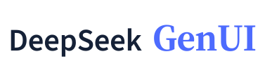
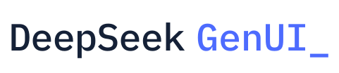

界面 G Surface G
以 GenUI 的 G 连接产品名与界面容器。
主推荐；字母和界面共享同一轮廓。
实际像素
已选定：02 交互节点 / Responsive Node。 查看定稿资源
九个候选覆盖字母符号、图文组合、组合字母与纯字标。保留蓝色，以生成界面和操作反馈为核心。优先比较整体架构，再选择需要精修的方向。
首轮评审建议（历史）：01 界面 G、04 回答展开、05 知识字标。01 最均衡；04 产品含义更直接；05 带有学习与知识气质。
第二轮新增：07 状态切换、08 界面构成、09 UI 连字。新增三案中更推荐 07；09 提供字母连字方向。
以 GenUI 的 G 连接产品名与界面容器。
主推荐；字母和界面共享同一轮廓。
围绕操作节点组织响应式界面。
抽象品牌方向；较接近通用框选符号。
以 DeepSeek 与 GenUI 两个名称的首字母建立记忆。
32px 起保留 DG；16/28px 使用 D 字形。
两条回答线索展开为一个可用界面。
功能含义最直接；适合项目介绍与商店展示。

突出学习、理解与工具辅助思考。
大字标有个性；工具栏使用专用 G 缩略标。

直接、可操作、有工程工具感。
工程气质鲜明，面向普通学习用户稍冷。

两种状态通过连续的留白衔接，表达操作带来的变化。
本轮首选；实心轮廓与斜向留白形成记忆点。
用一个稳定区域与两个可变模块，表达按问题组织界面。
界面含义直接；与通用布局图标的距离较近。
把界面的 UI 做成连为一体的简短标志。
字母关联清楚；底部连接与 i 的方形点建立统一构造。